Phan Phuoc Quoc Thien
Undergraduate Student, Major in IC Design
Ho Chi Minh City University of Technology and Education (HCMUTE)
This document serves as a formal exposition of my academic trajectory, professional motivations, and scientific achievements in support of my scholarship application. It comprehensively details my ongoing commitment to the field of Integrated Circuit (IC) Design, candidly addresses the socioeconomic challenges that have influenced my academic performance, and provides verifiable evidence of my capabilities through a documented history of national and provincial accolades.
Hailing from a rural agricultural community in Tanh Linh, Binh Thuan, my exposure to advanced technology was initially limited. However, I discovered a profound passion for computer science and electronics during my high school years. To me, programming and hardware design transcend conventional academic requirements; they represent the critical infrastructure for future technological paradigms. My overarching professional objective is to become a highly proficient IC Design engineer. I am dedicated to mastering the complexities of semiconductor technology to contribute directly to Vietnam's strategic positioning within the global semiconductor supply chain, thereby delivering tangible technological and socioeconomic value.
Throughout my secondary education, I consistently maintained an exceptional academic record, culminating in multiple provincial honors. However, my current university Cumulative Grade Point Average (CGPA of 7.64/10 or 3.09/4.0) [See Appendix A] does not holistically reflect my academic rigor or potential. This discrepancy is primarily attributable to significant socioeconomic constraints.
Relocating to Ho Chi Minh City for higher education placed a severe financial strain on my family, whose income is derived from unstable agricultural labor. To mitigate this burden and sustain my living and tuition expenses, I was compelled to engage heavily in the gig economy during my freshman year, working simultaneously as a ride-hailing driver and a fast-food service worker. The extreme physical fatigue and stringent time demands of these manual labor roles severely impeded my ability to dedicate adequate time to the rigorous theoretical and practical demands of the IC Design curriculum. Consequently, my academic focus was compromised, leading to a temporary decline in my grades.
Recognizing the unsustainability of this trajectory, I proactively restructured my professional engagements at the onset of the second semester. By leveraging my academic strengths, I transitioned from manual labor to intellectual work, securing positions as a private tutor for Mathematics and Informatics. This strategic shift not only stabilized my finances but, more importantly, restored the temporal and cognitive bandwidth necessary for deep academic engagement. Since this transition, my academic performance has exhibited a robust and consistent upward trajectory, aligning closer with my intrinsic capabilities.
Despite the aforementioned challenges, my commitment to technological innovation has yielded substantial recognition in competitive academic and scientific arenas. My notable achievements include:
These achievements validate my technical aptitude, resilience, and unwavering dedication to the field of engineering.
The following verified documents are provided to substantiate the academic and extracurricular claims articulated in this report.
Current Cumulative GPA: 7.64/10 (3.09/4.0) | Total Credits: 81
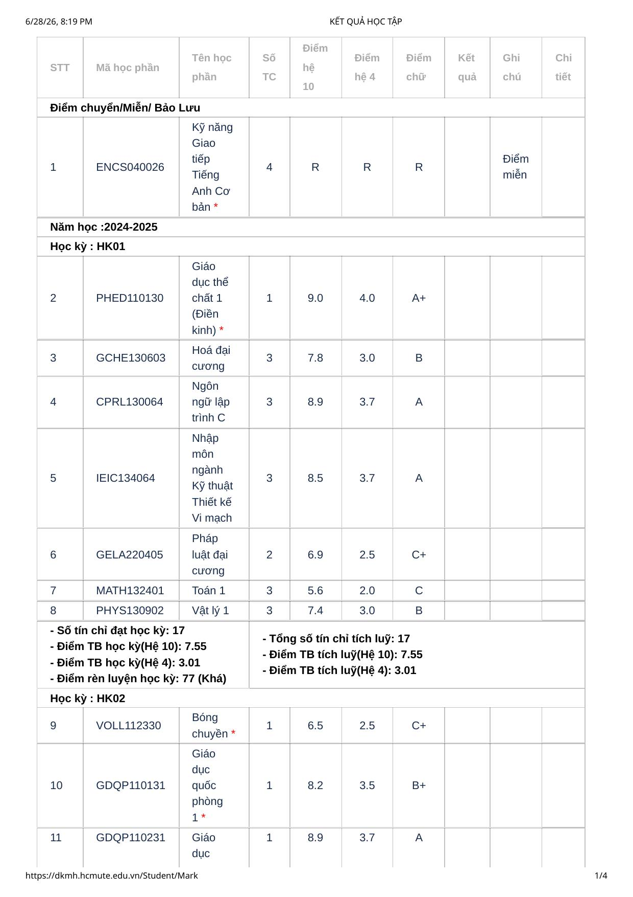
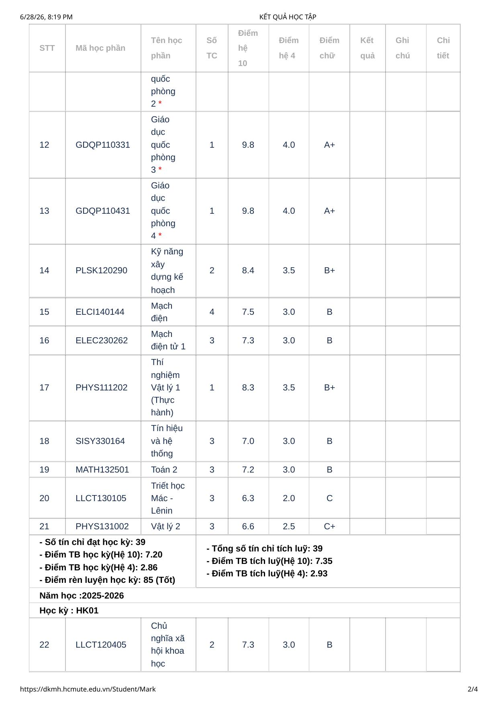
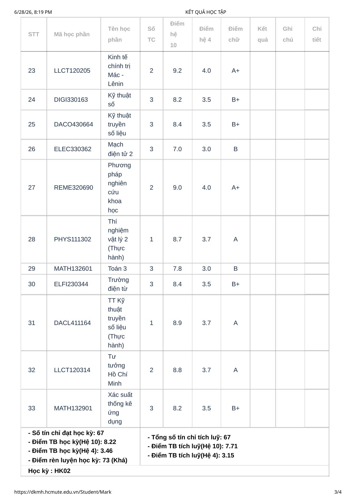
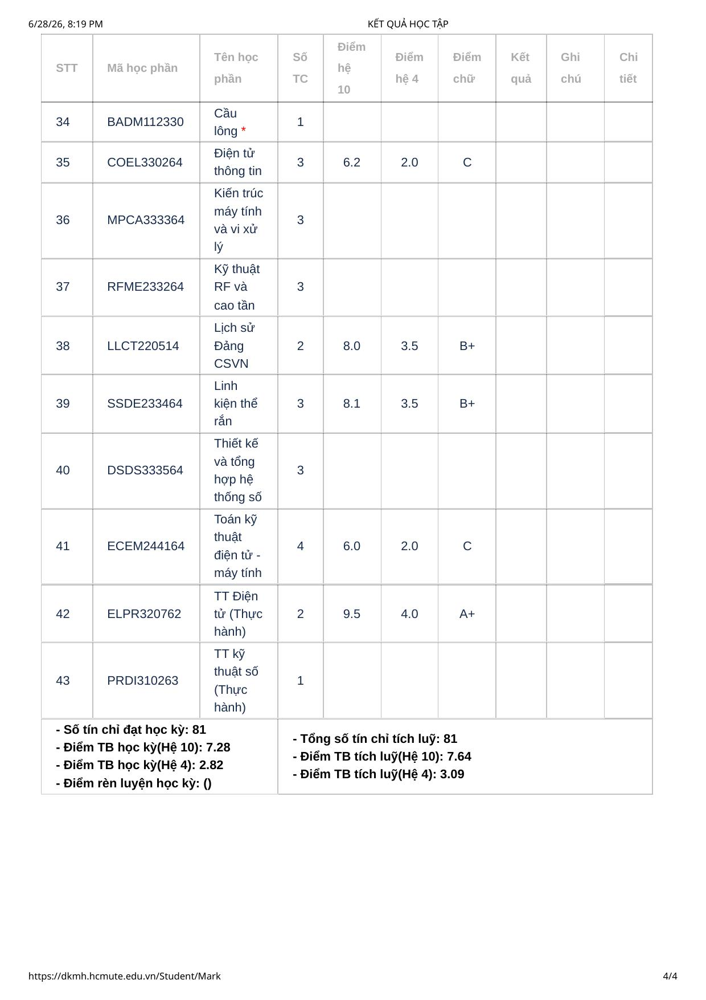
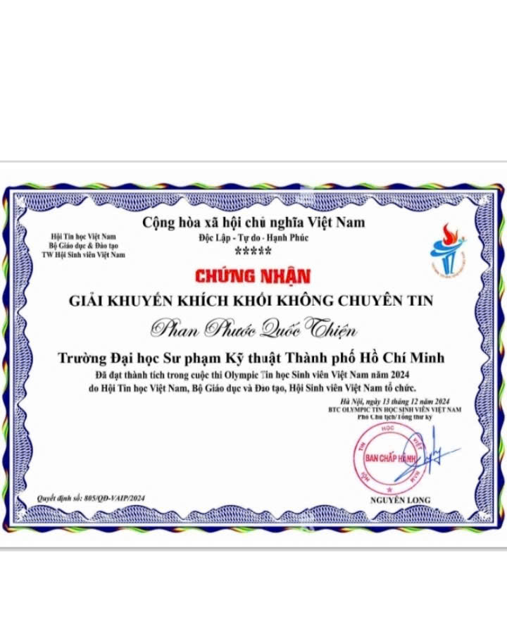
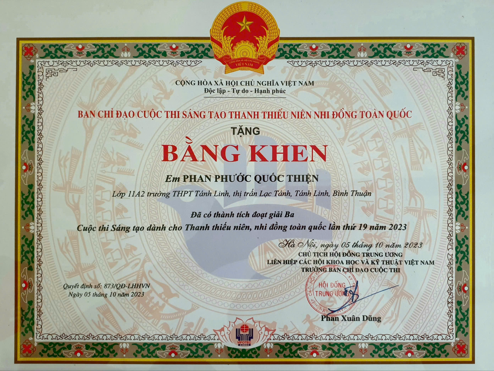
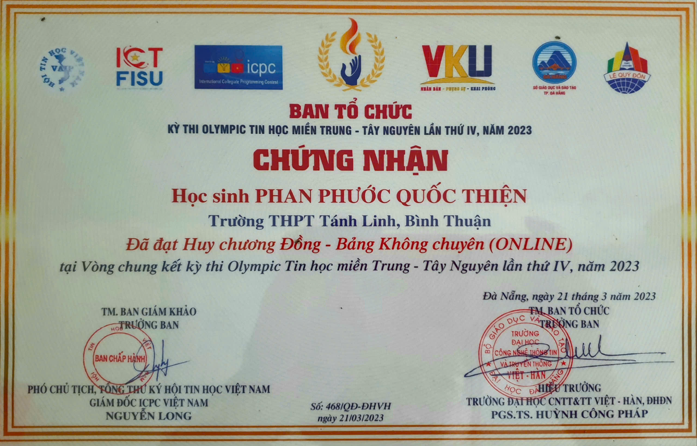
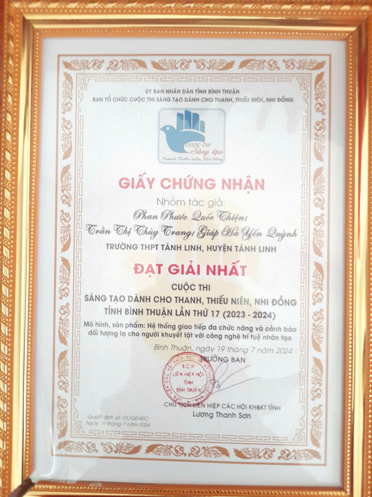
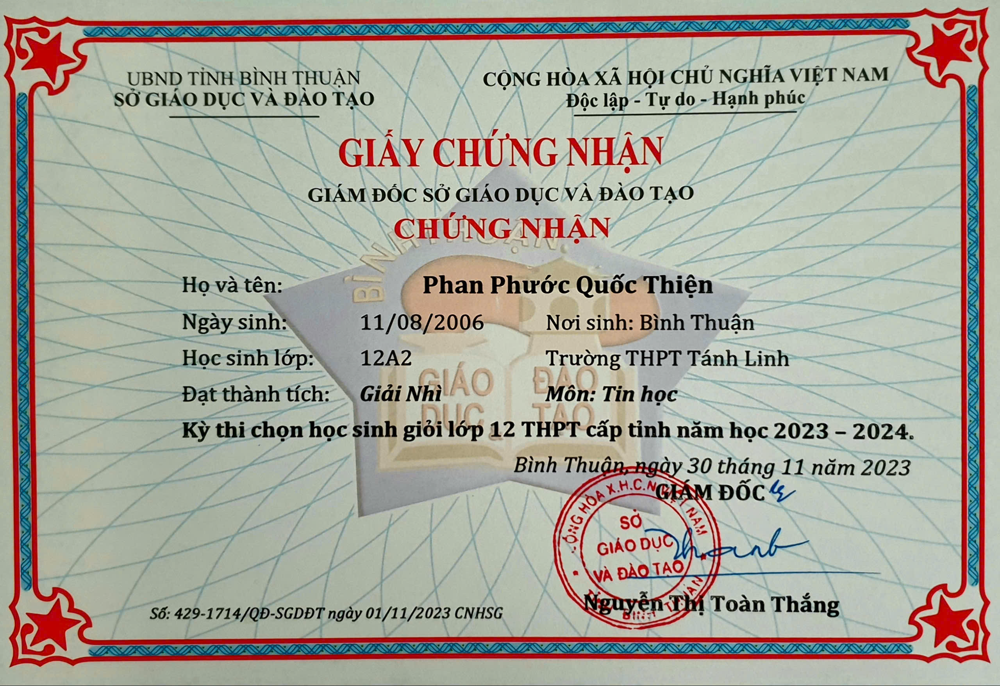
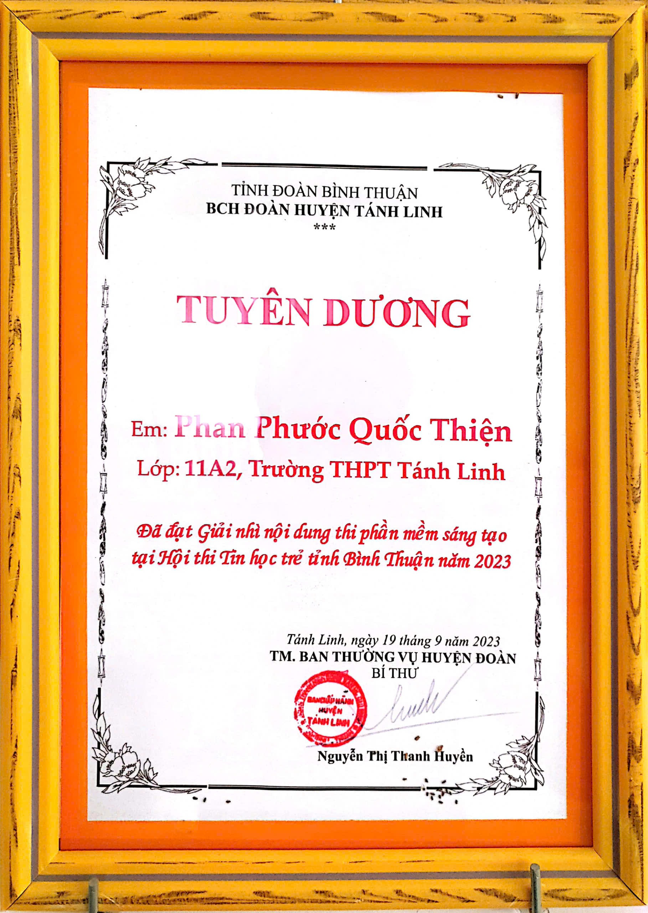
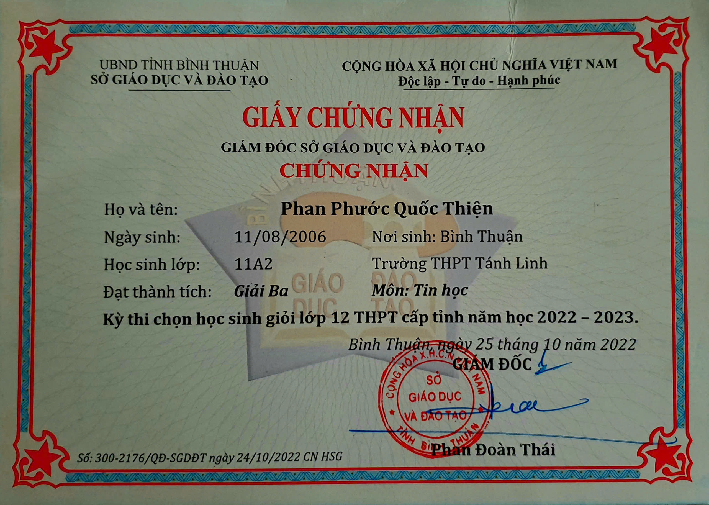
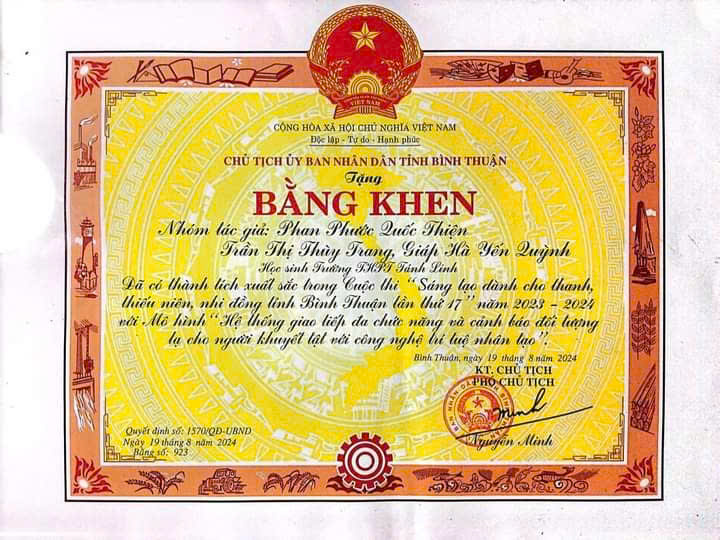
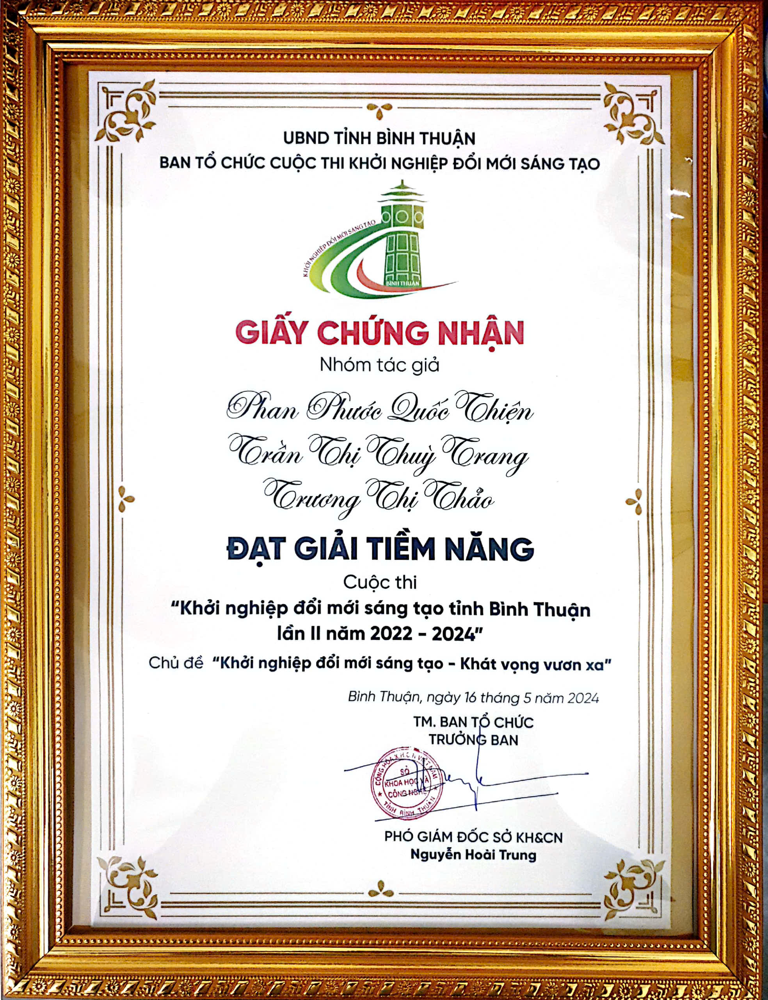
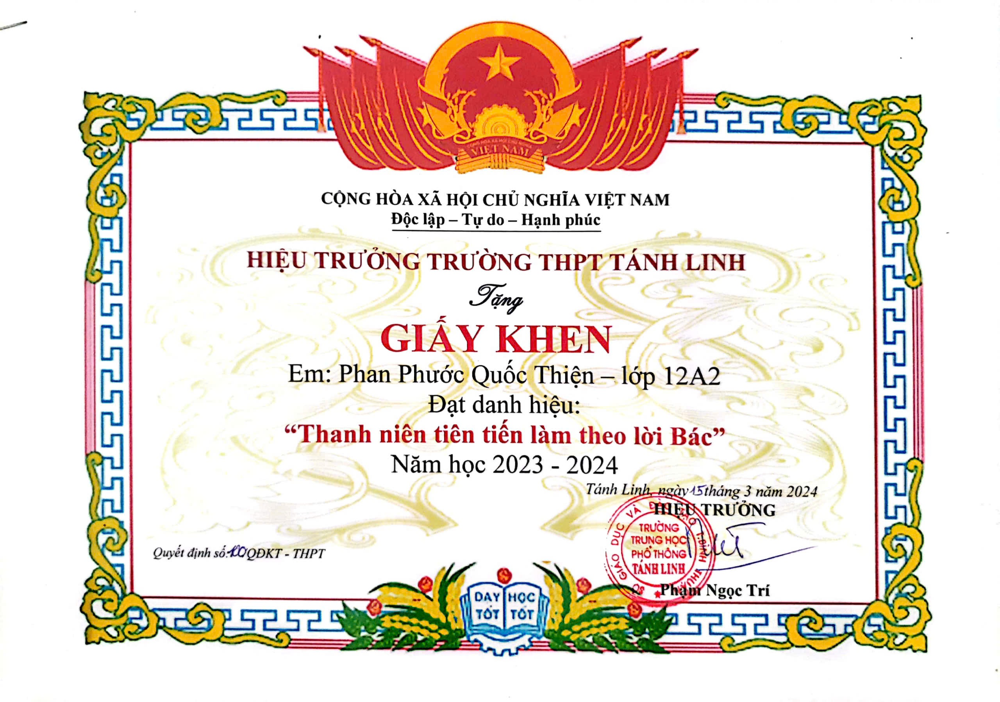